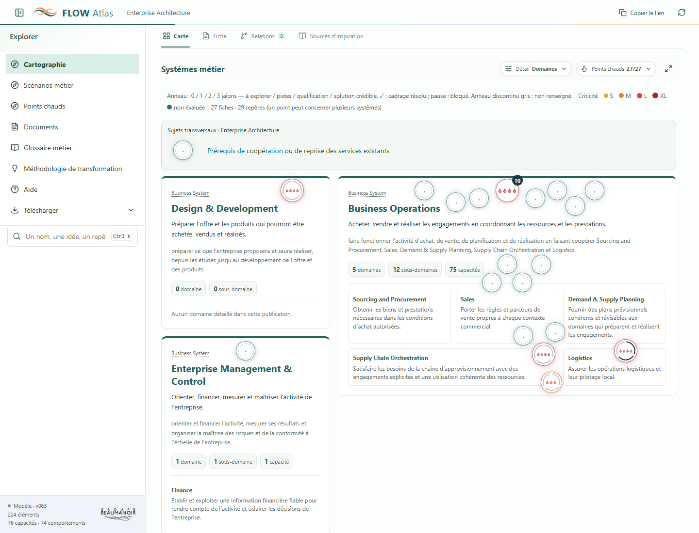
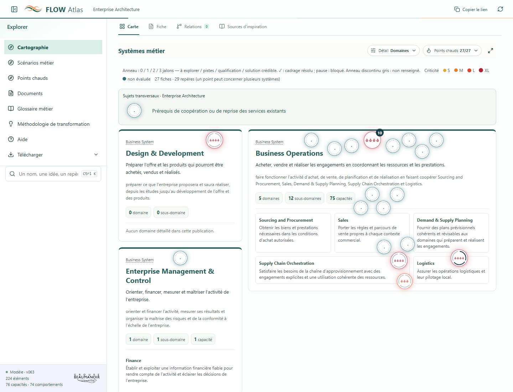
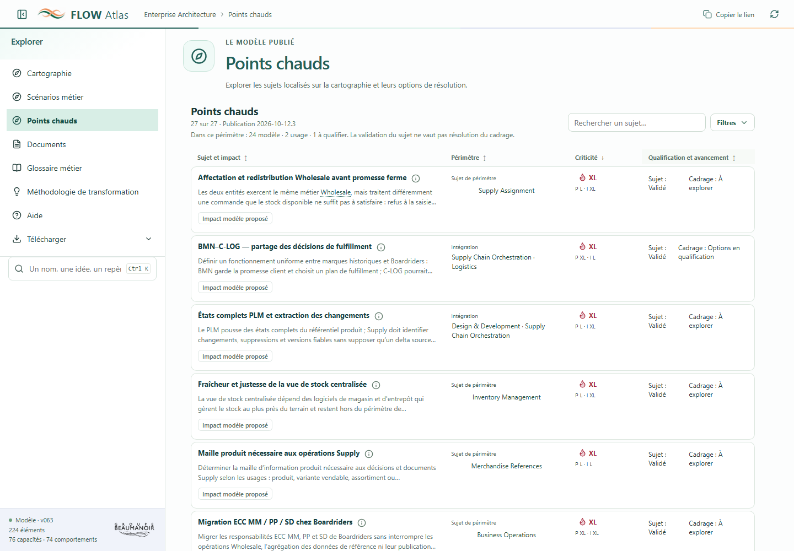
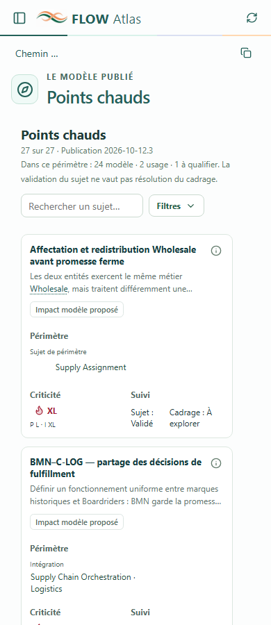

Les Hotspots : du sens du modèle à la décision en équipe
Le modèle couvre les distinctions utiles. L’interface demande encore au lecteur de les reconstituer. Les priorités sont d’expliquer les qualifications, de remettre le sujet au premier plan dans les aperçus et de rendre la liste plus compacte.
Audit de lecture du code et des contrats, complété par des parcours en navigateur sur Atlas local. Ce document propose des corrections ; il ne valide aucun nouvel arbitrage métier.
Périmètre et méthode
Publication consultée : 2026-10-12.2, guide méthodologique 2026-10-12.1. Base Git : 81339f8, avec les corrections locales de la fiche réalisées dans l’échange précédent : question Wholesale lisible et carte de criticité regroupée. Ces corrections locales ne sont pas encore déployées sur GitHub Pages.
Pages observées : métamodèle, glossaire méthodologique, aide atelier, catalogue, filtres, cartographie générale, fiches HS-008 et HS-030, catalogue mobile à 390 px. Aucune saisie n’a été enregistrée dans la séance. Aucun test avec des utilisateurs extérieurs n’a été réalisé : les difficultés de compréhension ci-dessous sont des évaluations UX, distinguées des défauts reproduits.
27 sujets validés : 24 structurants, 2 irritants d’usage, 1 impact à qualifier. 23 qualifications d’impact restent des hypothèses ; 4 sont documentées. 16 criticités ne sont pas évaluées. 12 sujets portent une Gap Analysis. Aucun cadrage n’est actuellement résolu ; 9 sujets n’ont pas de prochain pas renseigné.
Les contrôles précédents ont vérifié les téléchargements réels JSON, YAML et PDF, le plein écran et les petits écrans. Les parcours de cet audit n’ont généré aucune erreur JavaScript.
Les dimensions à expliquer ensemble
Dimension
Question du lecteur
Ce qu’elle ne permet pas de conclure
Sujet / qualification
Le sujet a-t-il été identifié, partagé, validé ?
« Validé » ne confirme ni dysfonctionnement ni solution.
Impact sur le cadrage
Touche-t-il au modèle métier ou au Core System, à la praticité d’usage, ou reste-t-il à qualifier ?
Ce classement ne donne ni une criticité ni une urgence.
Niveau de preuve
Sur quoi repose l’observation ou la qualification ?
Une déclaration documentée ne prouve pas une réalisation installée. Une hypothèse n’est pas un fait confirmé.
Criticité
Quelle difficulté politique et quelle difficulté d’implémentation ?
Elle ne mesure pas directement l’impact business, l’urgence ou le bénéfice attendu.
Avancement du cadrage
À explorer, pistes, qualification, solution crédible ? Quel blocage ?
Une solution crédible peut résoudre le cadrage sans choix définitif ni mise en œuvre.
Comparaison / options / décision
Quel écart, quelle complexité, quelles options et quel arbitrage ?
Un gap n’oblige pas à converger ; une non-convergence argumentée peut être une résolution.
Ce tableau devrait exister dans la documentation et être accessible depuis les libellés de la fiche. Hotspot et Gap Analysis restent des notions du glossaire méthodologique ; inutile de créer des définitions concurrentes dans le glossaire métier.
Corrections prioritaires
P1 · Compréhension
1. Expliquer « Structurant pour le cadrage » au point d’usage
Le tag est affirmatif, alors que la majorité des qualifications reste hypothétique. Sa justification est visible dans la fiche, mais pas directement dans le tag de la liste et des aperçus.
Recommandation : donner accès depuis le tag au critère, à la cible concernée (modèle métier / Core System), à la justification et au niveau de preuve. Afficher « Impact modèle proposé » quand la qualification est une hypothèse ; conserver « à qualifier » quand le classement est incertain.
HS-008 : impact modèle proposé, car la convergence des règles de couverture et de priorité avant engagement ferme doit être décidée. Le poids relatif du Wholesale éclaire l’enjeu ; il ne calcule pas automatiquement le tag.
Preuves : HotspotDetail.tsx, hotspotFraming.ts, MOD044, framing_impact. Le classement est argumenté ; aucune formule de calcul n’est définie.
P1 · Cartographie
2. Remettre le résumé du sujet dans les tooltips
Les aperçus individuels montrent le titre, la qualification, la criticité, les périmètres et l’avancement, mais pas problem ni la synthèse du cadrage. Ils renseignent sur l’état avant d’expliquer ce qui est en jeu.
Recommandation : titre → résumé du sujet en deux phrases → question à arbitrer si disponible → états compacts. Réutiliser le contenu publié ; ne pas générer une conclusion ni tronquer une réserve qui change le sens. Sur mobile, reprendre ce résumé dans la liste du sélecteur, sans dépendre du survol.
Preuve : composition de tip dans HotspotDisplay.tsx. Les tooltips disposent déjà d’un accès au clavier : conserver cet acquis.
P1 · Liste et édition
3. Réunir la qualification et l’avancement dans une cellule
Statut et avancement occupent deux colonnes. Les niveaux de complexité ajoutent encore deux colonnes à la criticité. Sur mobile, le tableau mesure environ 1 039 px pour une zone disponible de 305 px ; le scroll est contenu, mais la comparaison demande plusieurs déplacements latéraux.
Recommandation : quatre colonnes principales : Sujet et impact · Périmètre · Criticité · Qualification et avancement. Présenter les deux complexités dans l’aperçu de criticité et son éditeur. L’arbitrage peut être un détail accessible plutôt qu’une colonne permanente. Prévoir des cartes de synthèse sur mobile.
Sujet validé Cadrage : options en qualification Bloqué : règles de priorité à confirmer
En édition, un clic ouvre une fenêtre « Qualification et avancement » : statut du sujet, étape de cadrage, résumé, motif du blocage et prochain pas. Les justifications de crédibilité et options apparaissent seulement quand elles sont pertinentes. La fenêtre d’édition existe déjà ; regrouper les champs plutôt que créer un parcours concurrent.
Preuves : en-tête du tableau et fenêtre resolution dans HotspotCatalogPage.tsx ; mesure navigateur mobile. Le statut se modifie aujourd’hui dans la ligne, l’avancement dans une fenêtre distincte.
P1 · Méthode et métamodèle
4. Publier les critères de complexité et la matrice de criticité
MOD044 annonce une « grille publiée ». Le guide ne montre pas de matrice de croisement ni de critères concrets permettant de distinguer S, M, L et XL. Le calcul existe dans le code ; le schéma fixe le nom matrix-v1, sans décrire sa table de calcul dans le métamodèle exporté.
Recommandation : documenter la matrice existante, ses limites et des critères pour chacun des deux axes. Montrer un exemple L × XL → XL et expliquer qu’un axe non évalué rend la criticité non évaluée. Toute nouvelle grille de critères reste à éprouver ; elle ne requalifie pas automatiquement les hotspots.
La fiche possède une justification commune. Pour expliquer précisément pourquoi « politique L » et « implémentation XL », deux justifications par axe seraient utiles. C’est une évolution possible du contrat, à distinguer de la définition générique des complexités déjà ajoutée à la fiche.
Preuves : MOD044, scripts/hotspot_catalog.py, app/src/hotspotMap.ts, scripts/atlas_metamodel.py. Une éventuelle évolution doit aussi être présente dans les extractions YAML et JSON, avec tests de contenu et de calcul.
P1 · Partage
5. Conserver le contexte des filtres dans le lien partagé
Décocher « Hotspots modèle » dans la liste laisse 3 sujets : les 2 irritants et l’impact à qualifier. Le fragment reste #/hotspots. Sur la carte, le fragment reste #/map après changement des filtres ; un rechargement revient aux points chauds masqués. La liste et la carte ont des états de filtre distincts.
Recommandation : décider explicitement d’un filtre commun ou de filtres propres à chaque vue, puis conserver ce choix dans l’URL. Montrer les critères actifs et un bouton « Réinitialiser ». La copie du lien doit transmettre la publication, le périmètre et les filtres réellement présentés.
Défaut reproduit en navigateur ; App.tsx, état local de HotspotCatalogPage.tsx, contrat navigation.ts. Il remet en cause l’usage de partage en équipe.
P1 · Usage local
6. Rendre le blocage d’édition actionnable
L’édition de la publication courante est indisponible dans le serveur audité. La séance active a pour base 2026-10-11.2, tandis que le courant est 2026-10-12.2. La table renvoie seulement vers Aide → Mode atelier. Ce n’est pas un défaut des droits d’édition.
Recommandation : afficher les deux versions et le motif exact. Proposer le parcours sûr pour terminer ou archiver la séance et en ouvrir une sur le courant, en préservant son contenu. Distinguer clairement un site distant en lecture seule, une séance absente et une séance sur une autre publication. Cet audit n’a modifié ni archivé la séance.
Défaut reproduit ; lecture bornée de /__atlas__/workshop/staging.json : séance atelier-20261012T040908Z-3b22ba61, révision 0, base 2026-10-11.2. workshop.ts contrôle correctement la publication et son empreinte.
P1 · Sémantique de l’édition
7. Distinguer enregistrer une saisie et valider un sujet
Le bouton « Valider les modifications » enregistre des attributs dans le staging ; il ne capture pas un accord métier ni une publication. Ce vocabulaire concurrence le statut « Validé » du sujet.
Recommandation : « Enregistrer les modifications », puis « Enregistré dans la séance — à intégrer au backlog ». Réserver la validation du sujet à son champ et à son processus explicite.
Preuves : HotspotCatalogPage.tsx, aide atelier, contrat de staging.
Visibilité et approfondissements
P2 · Halos
8. Restaurer leur présence au repos
Les halos n’ont pas été retirés. Leur opacité de base est de 0,28, multipliée par un dégradé dont l’alpha maximal vaut 0,25 : le maximum théorique est donc 7 %, sous le bouton ; la partie visible autour du bouton est encore moins marquée. Au survol, l’opacité monte à 0,9.
Recommandation : renforcer le halo au repos, conserver la couleur neutre quand la criticité n’est pas évaluée et garder le cadrage résolu discret. Un prototype navigateur à 0,72 rend le halo plus présent ; ce réglage reste une proposition visuelle, sans modification du produit. Contrôler ensuite les zones denses, la lisibilité, les groupes, le zoom et le mouvement réduit. La perception du halo ne doit pas dépendre du survol.

État actuel : opacité 0,28 au repos.

Prototype temporaire : opacité 0,72. Les positions, criticités et données restent identiques.
Preuves : hotspots.css et mesure des 20 marqueurs de la vue générale. 16 sujets sur 27 ont une criticité non évaluée : garder une présence visible sans les colorer arbitrairement comme critiques.
P2 · Documentation
9. Donner des chemins de lecture plus courts
Le glossaire méthodologique contient les distinctions importantes mais les présente dans une définition dense suivie de nombreuses notes. Le guide possède deux sections Hotspot / Gap Analysis, sans exemple complet de bout en bout. La fiche ne relie pas directement ses tags et libellés aux entrées MOD044–MOD046.
Recommandation : une définition courte → le tableau des dimensions → un exemple Wholesale → les règles détaillées. Ajouter des liens et aides au clavier sur Impact, Criticité et Cadrage résolu, avec les définitions de la publication consultée. Éviter de réécrire ces termes dans le glossaire métier.
Preuves : pages métamodèle et glossaire observées ; MOD044, MOD045, MOD046 ; absence de liens méthodologiques sur ces libellés dans la fiche et les filtres.
P2 · Fiche narrative et copil
10. Faire remonter la question de décision
Le récit est solide mais une fiche avec deux analyses d’écarts et quatre options devient longue. La vue initiale privilégie l’avancement ; la question de convergence est plus bas, dans chaque analyse.
Recommandation : une synthèse initiale : sujet, différence ou complexité, conséquences à éprouver, question à arbitrer, prochain pas. Conserver le récit complet dessous. Pour HS-008, « Faut-il unifier le Wholesale, et quelles variantes préserver ? » doit être visible dès l’ouverture. Présenter la comparaison entre SI côte à côte sur écran large, verticalement sur mobile.
Évaluation de lecture des fiches HS-008 et HS-030 ; ce n’est pas une mesure auprès d’un comité réel.
P2 · Sources
11. Donner des sources compréhensibles et consultables
La question Wholesale a été rendue lisible localement. La provenance détaillée expose encore des identifiants Uxxx et un chemin du dépôt, sans accès au récit depuis Atlas. Le traitement de la question repose sur une reformulation ciblée dans publicText.ts ; ce mécanisme est fragile pour de futures formulations.
Recommandation : écrire les récits publiés sans dépendre d’identifiants internes, conserver ces derniers en provenance et associer aux sources un titre, une nature, une date si connue et un accès lorsqu’il existe. Indiquer « source interne non consultable dans Atlas » quand nécessaire. Ne pas inventer de lien ni publier un document non autorisé. Une correction canonique publiée passe par une nouvelle release.
Provenance HS-008 observée : U942, U943, etc., chemin audits/2026-10-10-hotspots-sources/consolidation.md. Le document DOC001, lui, possède un parcours et un PDF téléchargeable testés.
P2 · Parcours d’enrichissement
12. Expliquer la limite de la modification en atelier
Les fenêtres modifient périmètre, complexités, justification et avancement. L’impact modèle/usage, les observations de Gap Analysis et le texte du sujet ne sont pas tous éditables dans cette interface. L’aide indique le recours à Codex, mais cette limite n’est pas expliquée à proximité des contenus.
Recommandation : distinguer « Modifier dans la séance » et « Demander un enrichissement du modèle ». Ne pas promettre une édition complète de la fiche. Une extension d’édition demanderait un contrat de staging, un contrôle des preuves et des tests adaptés.
Preuves : champs de HotspotDraft, trois modes de fenêtre et aide atelier.
P1 · Couverture de non-régression
13. Faire exécuter les parcours Hotspot par la CI
Les scripts de vérification de détail, de résolution et de carte existent, mais pnpm verify, exécuté par GitHub Pages, n’appelle pas les entrées verify:hotspots, verify:hotspot-resolution et verify:hotspot-detail. Les unités et les vérifications générales ne remplacent pas ces parcours spécialisés.
Recommandation : intégrer ces parcours à la CI pour les changements concernés, avec des fixtures permettant également les états résolus, bloqués et incertains absents du catalogue actuel. Tester le lien partagé filtré, la restauration de contexte, les tooltips clavier/tactile, les fenêtres d’édition et la présence du halo au repos.
Preuves : app/package.json et .github/workflows/atlas-pages.yml. Conserver les contrôles réels des octets téléchargés, courant et historique, JSON/YAML/PDF, et la complétude du métamodèle.
Ce qui fonctionne et doit être conservé
Un hotspot autonome, extérieur à la hiérarchie, avec des ancrages explicites.
Des analyses inter-SI et intra-SI qui distinguent faits rapportés, hypothèses et preuves de réalisation.
La possibilité de résoudre le cadrage par une décision de convergence partielle ou de non-convergence.
Le récit, les options, les réserves et le prochain pas ; le plein écran et les liens directs.
Les filtres modèle / usage / impact à qualifier et le même moteur de filtrage.
Le sujet transversal HS-031 visible au niveau Enterprise Architecture, sans projection arbitraire dans tous les systèmes.
Des groupes de marqueurs déployables et des tooltips accessibles au clavier.
Les publications figées, le staging distinct du backlog et les téléchargements complets vérifiés.
Lot de correction recommandé
Lisibilité immédiate : tooltips narratifs, halos visibles, explication du tag et cellule Qualification / avancement avec sa fenêtre ; renommer l’enregistrement.
Parcours fiable : filtres partageables, diagnostic de séance précis, présentation mobile et vérifications Hotspot dans la CI.
Méthode et contrat : matrice et critères documentés, exemples de qualification, justifications par axe si retenues, sources consultables et synthèse de décision.
Les deux premiers lots portent surtout sur le frontend et le parcours local. Le troisième implique la documentation et, pour les justifications par axe ou un catalogue de sources, une évolution ciblée du contrat et une nouvelle publication. Tous les nouveaux champs et règles retenus doivent apparaître dans les extractions YAML et JSON ; aucune évolution ne requalifie automatiquement les évaluations existantes.
Le responsable d’instruction, une date de réexamen et une issue de convergence typée restent des pistes de suivi, déjà identifiées dans l’audit U969. Elles ne sont pas nécessaires pour corriger les défauts UX observés et ne sont pas ajoutées ici.
Livrable d’audit technique. L’application et la séance n’ont pas été modifiées par cet audit ; les captures proposées sont des prototypes de navigateur. Les observations brutes et les autres captures sont conservées temporairement dans .runtime/qa-hotspot-audit/.
Application des préconisations — 12 octobre 2026
Publication locale 2026-10-12.3, guide 2026-10-12.2. Le constat ci-dessus conserve l’état audité ; ce lot applique les treize corrections UX et documentaires.
Impact argumenté et niveau de preuve accessibles ; hypothèses affichées comme proposées.
Liste à quatre colonnes : sujet sur 45 % de la largeur, aperçu sur deux lignes, résumé complet via ⓘ, attributs resserrés et cartes compactes sur mobile. Qualification et avancement modifiables ensemble dans une fenêtre.
Criticité et axes expliqués ensemble ; matrice, repères, justifications facultatives et sources nommées conservés dans les extractions complètes.
Filtres communs à la liste et à la carte, critères visibles, réinitialisation et lien partagé. Tooltips et sélecteur retrouvent le sujet ; halos visibles au repos.
Question d’arbitrage en tête de fiche et observations côte à côte. Sources internes identifiées comme non consultables ; le PDF reste téléchargeable.
Diagnostic d’édition précis ; ancienne séance vérifiée vide et archivée, nouvelle séance sur la publication courante. Enregistrement de séance distinct de la validation et de la publication.
Parcours spécialisés intégrés à la vérification CI, avec tests de téléchargement, filtres partagés, édition, mobile, qualification, halos et publications figées.
Les criticités, validations métier et avancements existants restent conservés. Les repères d’estimation sont à éprouver ; responsable, réexamen et issue de convergence typée restent des pistes futures.

Liste locale après correction, avec séance d’édition active.

Le résumé reste disponible sans imposer sa lecture complète dans la liste.